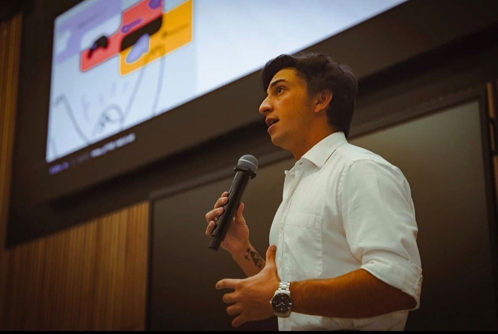
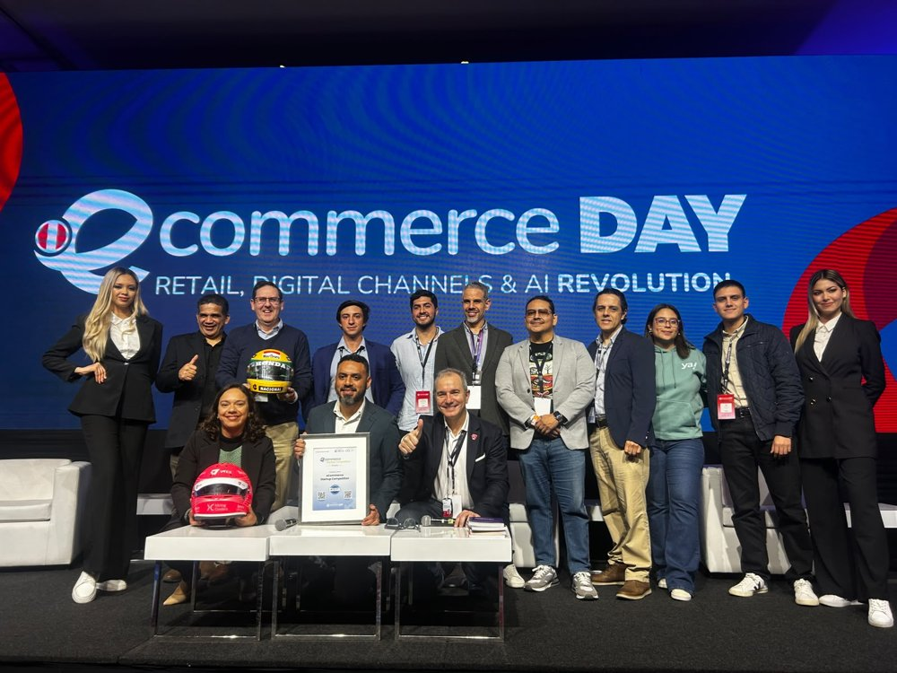
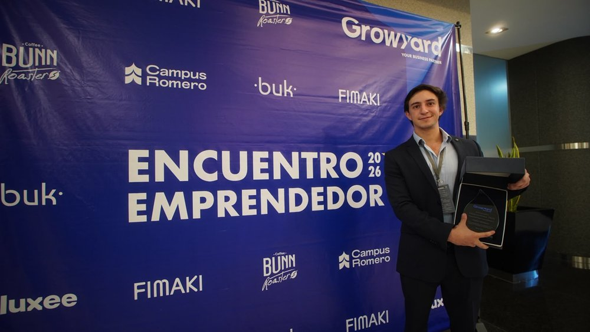
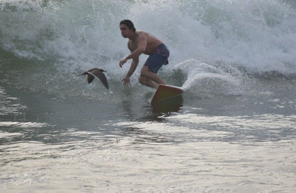
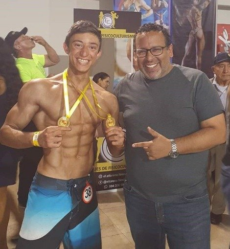
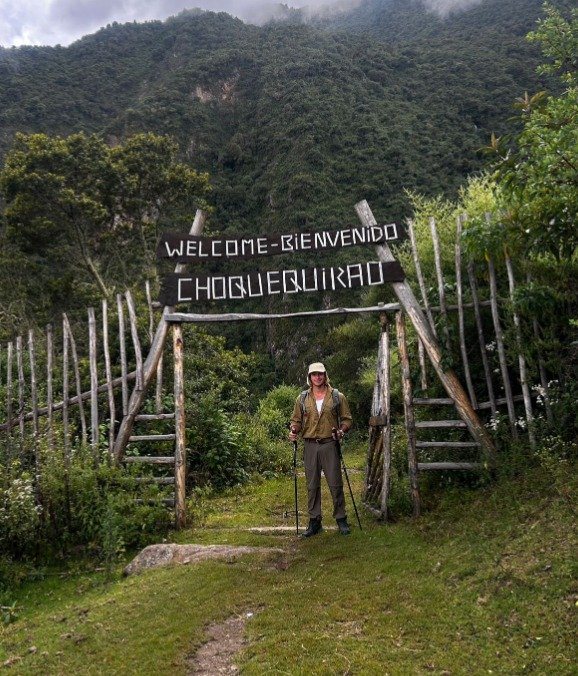

¿Cómo convertir las primeras ventas de un emprendimiento en un modelo de crecimiento sostenible?
Business meets future
Muchos "no" aprendidos, muchos procesos rotos y uno que sí funcionó. Hoy te lo paso en 6 pasos.
Partner Manager en una startup de IA para ventas. Antes, vendedor B2B: cientos de demos, llamadas y seguimientos.





Pasar de una a otra es convertir tus primeras ventas en un modelo de crecimiento sostenible. Exige estrategia, conocimiento del mercado y ejecución.
Tu número hacia atrás
Tu cliente ideal (ICP)
Tus primeras 10 ventas
Dónde vive tu ICP
Product-market fit
Playbook, IA y equipo
Antes de salir a vender, sabe cuántas conversaciones necesitas.
No hay ICP perfecto, ni sistema, ni presupuesto. Solo conversaciones uno a uno.
Amigos, familia, ex compañeros. Practicas el pitch con gente que te da feedback honesto.
Lo que repitas 10 veces es lo que después vas a automatizar.
Es tu primera data de mercado. Vale más que cualquier encuesta.
Tú vas a buscarlos: LinkedIn, llamadas, mensajes directos. Rápido para validar.
Ellos te encuentran: contenido, SEO, casos de éxito. Lento, pero se acumula.
Pocas empresas de alto valor, mucha personalización.
CAC casi cero y LTV más alto. El más barato y el más subestimado.
No necesitas estar en todos lados. Elige 1 o 2 canales donde ya vive tu ICP y hazlos bien.
| Ecosistema | Para quién | Cómo prospectar ahí |
|---|---|---|
| Meta IG · FB · WhatsApp | Consumidor final y pymes | Contenido + campañas que llevan a WhatsApp o a un formulario |
| B2B, decisores | Personal branding + mensaje directo 1 a 1 | |
| X | Tech, founders | Conversación pública y DMs |
| Google SEO · SEM | Quien ya busca tu solución | Contenido que responde sus preguntas + anuncios por búsqueda |
| Respuestas de IA GEO | Quien le pregunta a ChatGPT o Claude | FAQs claras, comparativas y menciones en sitios confiables |
| Comunidades y eventos | Nichos, ecosistemas | Webinars, meetups, ferias como DIGIFEST |
| Referidos | Tus clientes contentos | Pide 1 referido después de cada resultado |
Blog, casos de éxito y perfil de Google Business si vendes local. Lento, pero gratis y acumulativo.
Pagas por aparecer cuando alguien busca tu solución. Intención alta desde el día 1. Sirve para validar si alguien la busca.
Que ChatGPT, Claude o Perplexity te recomienden. Cada vez más gente pregunta a una IA antes que a Google.
Así llegué a 3M+ visualizaciones sin pagar ads.
Guarda las preguntas y objeciones reales de tus clientes. Esa es tu mina de temas.
"Saca las 5 dudas que más se repiten y escribe un guion de 45 segundos para cada una, con gancho en la primera frase."
Video corto, post y carrusel por tema. Lo que tenga más comentarios se vuelve anuncio.
Personalizado, con una señal concreta de su negocio. Sin pitch.
Un dato o un caso que le sirva, aunque no te compre.
"¿Tiene sentido una llamada de 15 minutos esta semana?"
Si fue LinkedIn, ahora correo o WhatsApp (si te dio el número).
"Entiendo que no es prioridad. ¿Te escribo en 3 meses?"
Plantilla sugerida. La mayoría abandona después del primer mensaje: el seguimiento es donde se gana.
PMF es cuando tus clientes empiezan a referirte sin que se lo pidas. Sin eso, escalar duele así:
Tu MRR no crece como lo proyectaste, por más que vendas.
Consigues clientes solo para reemplazar a los que se van.
Cada venta sin PMF es deuda disfrazada de crecimiento.
El descuento se gana usando el producto. Así ves quién lo usa de verdad.
¿Qué tienen en común? Probablemente no eran tu ICP.
¿Por qué se quedan? Esa respuesta es tu mejor copy de venta.
El momento en que el cliente "entiende" tu producto. Llévalo ahí lo antes posible.
Escalar sin sistema es multiplicar el caos. El playbook es lo que hace que otro venda como tú.
Qué pasa en cada una y qué hace avanzar al lead.
Tu frase del paso 2, por escrito.
Los primeros mensajes y seguimientos con mejor respuesta.
"Está caro", "lo tengo que pensar", "ya uso otra cosa".
Qué pasa después de que el cliente firma.
Los comportamientos que avisan que alguien se va a ir.
El playbook lo escribes tú. Lo ejecuta tu stack de IA → veamos cada app.
Mi ICP es: [tu frase]. Revisa mis campañas de Meta de los últimos 7 días y dime: 1) qué anuncio tiene el menor costo por lead calificado, 2) cuál apagar y por qué, 3) qué público probar, 4) 3 copies nuevos del ganador.
Claude: gratis · Pro $20/mes. Si tu cuenta aún no tiene el conector, exporta el reporte de Ads Manager y súbelo.
Busca en tiempo real en la web y en X. Investiga tu mercado, arma listas de prospectos desde fuentes públicas, detecta señales de compra y redacta mensajes personalizados.
Gratis con límites · SuperGrok $30/mes
Mi ICP es: [tu frase]. Busca 20 empresas en [país] que encajen. Para cada una: nombre, cargo, link público, una señal reciente del dolor y un primer mensaje de 3 líneas. Ordénalos del más al menos prometedor.
Toma notas de tus reuniones sin bot en la llamada. Al terminar completa las notas, guarda la transcripción y las manda a tu CRM (Attio, HubSpot), Slack o Notion.
Gratis con historial limitado · Business $14/mes
| Las 5 preguntas del ICP | Puntaje |
|---|---|
| Tiempo con el problema | 0 · 1 · 2 |
| Qué usa hoy | 0 · 1 · 2 |
| Decisor y plazo | 0 · 1 · 2 |
| Herramientas previas | 0 · 1 · 2 |
| Métrica de éxito | 0 · 1 · 2 |
Donde vive cada lead, cada conversación y cada venta. Attio tiene IA: completa datos de empresas y le preguntas "¿qué deals están parados hace 2 semanas?"
App open source para manejar varios agentes de IA a la vez desde la compu o el celular: uno investiga, otro redacta seguimientos, otro actualiza el CRM.
Guarda tus prompts, tu playbook y tus automatizaciones con historial de cambios. Claude Code y los agentes trabajan directo sobre tus repos.
Cualquier CRM sirve si todo llega ahí solo. Si tienes que copiar y pegar, en 2 semanas lo dejas de usar.
Ya viste cada app. Juntas funcionan así: cada una hace una parte y le pasa el dato a la siguiente.
Aquí aparece el lead: ve tu anuncio o tu contenido y te escribe.
Te dice quién es, qué empresa tiene y qué dolor muestra.
Hablas con él. Granola anota la reunión y la puntúa del 0 al 10.
Todo queda en un solo lugar: etapa, notas y próximo paso.
Claude redacta el seguimiento. Los agentes de Paseo hacen lo repetitivo.
| Conexión | Qué pasa sola | Cómo se conecta | Dificultad |
|---|---|---|---|
| Granola → CRM | Las notas de cada reunión se guardan en el contacto | Integración nativa con Attio o HubSpot (1 clic) | Fácil |
| CRM → Claude | Le preguntas por tu pipeline y te redacta los seguimientos | Conector de Attio o HubSpot en Claude | Fácil |
| Meta Ads → Claude | Lee tus campañas y te dice qué apagar y qué probar | Conector oficial de Meta (beta) | Fácil |
| Grok → CRM | Tu lista de prospectos entra al CRM con sus señales | Exportas la lista e importas el archivo | Fácil |
| WhatsApp / web → CRM | Cada lead nuevo entra solo, con su origen | Zapier, Make o n8n | Media |
| Paseo → CRM y GitHub | Agentes actualizan deals y guardan tus prompts | Paseo + Claude Code | Avanzada |
Empieza por la primera fila: es la que más horas te ahorra desde el día 1.
NRR: cuánto crece el ingreso de tus clientes actuales sin contar clientes nuevos.
Sube de plan cuando ya sacó todo el valor del actual.
Suma otro producto o servicio al cliente que ya confía en ti.
El precio crece a medida que el cliente usa más.
Si no está escrito, el nuevo va a improvisar.
Busca a quien ejecute el playbook, no a un héroe.
El playbook es un producto: siempre tiene versión nueva.
Habla 30%, escucha 70%.
Pregunta "¿por qué?" hasta llegar al dolor real.
Entiende el miedo del cliente a equivocarse.
Cada no es información, no algo personal.
Explica tu producto en una frase.
La venta casi nunca cierra en la primera conversación.
Meta, ticket y conversaciones al mes.
Quién, qué dolor, qué parche, cuánto paga.
Para entender, no para vender.
Directo, a alguien de tu red.
¿En cuál de los 6 pasos estás hoy?
¿Feedback sobre tu estrategia comercial? Conversemos
LinkedIn¿Escalamos juntos? Sígueme
Instagram